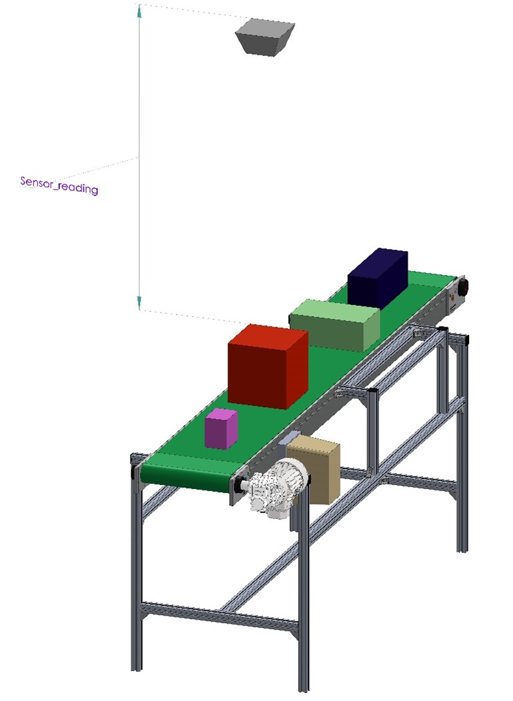

ROS Topics: Publishers and Subscribers
In deze workshop leer je de basis van ROS2 topics. De theorie hiervan wordt gedoceerd, maar kun je ook vinden op deze website van ROS

We gaan in deze en volgende workshops aan de slag met een hoogte meting van dozen op een conveyor(transportband), zie afbeelding hieronder.

In de workshop wordt de range-sensor gesimuleerd door een node met een topic welke de afstand van een voorwerp tot de range-sensor weergeeft. p.s. Je kunt ook van een fysieke range-sensor gebruik maken, dit staat beschreven in ESP32 ultatrasonic-sensor
Start de node die de range-sensor simuleert.
ros2 run range_sensor sensor_info_publisher_simulation
n.b. In de terminal zal slechts 1 regel output worden gegenereerd
Controleer of de range-sensor node ook daadwerkelijk gestart is(doe dit in een nieuwe terminal)
ros2 node list
Bekijk welke topics(onderwerpen) door de node gepubliceerd worden
ros2 topic list
Volg de messages(berichten) die op het topic worden gepubliceerd
ros2 topic echo /sensor_info
Je kunt deze monitor stoppen door ctrl+c
Informatie opvragen over het gebruik van de topic
ros2 topic info /sensor_info
Je vindt hierin de volgende informatie
Bericht type ook wel interface of message-type genoemd
Aantal nodes dat publiceren op dit topic
Aantal nodes dat lezen van dit topic
Informatie opvragen over het bericht type, ook wel interface genoemd
ros2 interface show range_sensors_interfaces/msg/SensorInformation
Opdracht 1
In deze opdracht ga je een subscriber maken in een Python programma op het topic /sensor_info
Je gaat daartoe het Python programma assignment1.py bewerken op bepaalde aangeven plaatsen.
Je kunt de broncode van het programma openen met de editor uit je development omgeving(bijvoorbeeld Visual Code), door naar de juiste map/directory te navigeren. Het bestand bevindt zich op de volgende locatie: ~/ros2_industrial_ws/src/ROS2_industrial/1_basics/range_sensor/range_sensor/
Als alternatief kunt het bestand ook op de volgende wijze openen:
gedit ~/ros2_industrial_ws/src/ROS2_industrial/1_basics/range_sensor/range_sensor/assignment1.py
Opmerking: als gedit nog niet is geinstalleerd dan kun je dat als volgt doen:
sudo apt install gedit
Opdracht 1.1 creeër een Python subscriber
Maak op onder de regel een subscriber aan met de vogende gegevens:
Topic: /sensor_info
Message-type: sensor_info
Callback: sensor_info_callback
Noem de subscriber ‘sensor_info_subscription’, zorg ervoor dat dit in de context van de klasse gebeurt, door de self operator. Voer de code in onder onderstaande regel in het assignment1.py bestand
<Assignment 1.1, creeër hier de subscriber op het topic /sensor_info>
Test de werking van het programma
ros2 run range_sensor assignment1
Opdracht 1.2 Bereken de hoogte van de doos en druk deze af
In deze opdracht ga je de hoogte van het object op de conveyor berekenen. De sensor is op 2 meter hoogt t.o.v. de conveyor gemonteerd. Maak een berekning voor de hoogte van het object onder de sensor door schuift. Druk deze hoogte af met het “self.get_logger().info()”statement in de “sensor_info_callback()’member-functie.
Voer de code in onder onderstaande regel in het assignment1.py bestand
<Assignment 1.2, bereken hier de hoogte van het object>
Let op: Volgens het gegevensblad van de sensor meet de sensor tot 2.0 meter, echer metingen groter dan 1.9 meter zijn zeer onderheving aan ruis en kunnen z.g.n. false-positive metingen opleveren. Houd hiermee rekening in je berekening.
Test de werking van het programma
ros2 run range_sensor assignment1
Opdracht 1.3 Creeër een nieuw message type
In deze opdracht ga je een nieuw message type maken waarin later, via een topic, de hoogte van het object onder de sensor wordt gepubliceerd. Naam message type: BoxHeightInformation Infomatie in message type: box_height (type float32)
Volg daar toe de volgende handelingen
Navigeer naar de directory msgs in de package range_sensors_interfaces
Maak een nieuw bestand BoxHeightInformation.msg
Open het bestand en voeg de volgende regel toe:
float32 box_height # Height of box
Sla het bestand op
Om dit nieuwe type in de Colcon build op te nemen dien je het CMakeLists.txt bestand kenbaar te maken dat er een message type wordt toegevoegd.
Navigeer naar de root-directory van de package package range_sensors_interfaces
Open het bestand CMakeLists.txt (dit is bestaand bestand)
Zoek de regel met rosidl_generate_interfaces(${PROJECT_NAME} op.
Plaats onder de regel de volgende regel:
“msg/BoxHeightInformation.msg”
Sla het bestand op
Vervolgens dient je workspace gebouwd te worden:
Navigeer naar de root-directory van je workspace
cd ~/ros2_industrial_ws/
Bouw het de workspace:
colcon build --symlink-install
–> Beter nog bouw alleen de package die je hebt gewijzigd
colcon build --symlink-install --packages-select range_sensors_interfaces
Activeer je nieuw geboude environment
source install/setup.bash
–> Of
source ~/ros2_industrial_ws/install/setup.bash
Let op: Dit laatste dien je te doen in alle geopende terminals
Controleren van je gemaakte message
Gebruik onderstaand commando om een lijst met alle messages, services en actions op te vragen
ros2 interface list
Je kunt ook een filter maken door midel van een gepijpt grep commando waar in een deel van de message naam is opgenomen (in dit geval Box)
ros2 interface list | grep Box
Bekijk of je message goed is gefineerd
ros2 interface show range_sensors_interfaces/msg/BoxHeightInformation
Opdracht 1.4 Creeër een Python publisher
Under construction
Opdracht 1.5 Publiceer de hoogte van de doos
Under construction
Opdracht 1.6 Gebruik rgt-graph
Under construction